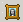

U kunt afbeeldingen invoegen in uw web paginas door de Afbeelding Invoegen
knop te gebruiken. Na het klikken op deze button, zal een pop-up venster
verschijnen om u te helpen met de selectie van de juiste afbeelding van
de externe server, of om een nieuwe te uploaden. U kunt afbeeldingen
uploaden vanaf uw lokale computer naar een externe server. U kunt afbeeldingen
invoegen van de upload folder in het KTML3 bewerkbare gedeelte. Zelfs
als de afbeeldingen zijn verwijderd van de website pagina's zullen de
afbeeldigen blijven bestaan totdat u ze met de verkenner verwijderd.
Afbeeldingen Invoegen